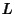
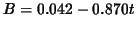
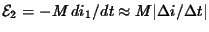
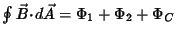
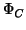

Next: About this document ...
Selected Solutions
for
Chapter 31, 32
of
Fundamentals of Physics, 6/E
by Halliday, Resnick, and Walker
James B. Whitenton
Southern Polytechnic State University
- 3
-
- Appealing to Lenz's law (especially Fig. 31-5(a)) we see that the current flow
in the loop is clockwise. Thus, the current
is from
right to left through
 .
.
- 10
- The flux
does not change as the loop is rotated.
Faraday's law only leads to a nonzero induced emf when the flux is changing, so the result
in this instance is .
- 15
- Let  be the length of a side of the square circuit. Then the magnetic flux
through the circuit is
, and the induced emf is
Now
 and
. Thus,
The magnetic field is out of the page and decreasing so the
induced emf is counterclockwise around the circuit, in the same direction as the emf of
the battery. The total emf is
.
- The current is in the sense of the total emf (counterclockwise).
- 20
- The field (due to the current in the straight wire) is
out-of-the-page in the upper half of the circle and is into the
page in the lower half of the circle, producing zero net flux, at
any time. There is no induced current in the circle.
- 25
- Thermal energy is generated at the rate
(see Eq. 27-23). Using Eq. 27-16, the resistance is given by ,
where the resistivity is
(by
Table 27-1) and
is the cross-sectional area of the wire ( m is the wire thickness). The area enclosed by the loop is
since the length of the wire ( m) is the circumference of the loop.
This enclosed area is used in Faraday's law (where we ignore minus signs in the interest
of finding the magnitudes of the quantities):
where the rate of change of the field is
T/s.
Consequently, we obtain
- 30
- The ``height" of the triangular area enclosed by the rails and bar is the same
as the distance traveled in time : , where
.
We also note that the ``base"
of that triangle (the distance between the intersection points of the bar with the rails)
is
 . Thus, the area of the triangle is
. Thus, the area of the triangle is
Since the field is a uniform
, then the magnitude of the flux (in SI units) is
At s, we obtain
.
- The magnitude of the emf is the (absolute value of) Faraday's law:
in SI units. At s, this yields
V.
- Our calculation in part (b) shows that .
- 32
-
- 70
- We use
 to find :
- 3
- We use Gauss' law for magnetism:
. Now,
, where is the magnetic flux through the first end
mentioned, is the magnetic flux through the second end mentioned, and
 is the magnetic flux through the curved surface. Over the first end
the magnetic field is inward, so the flux is
. Over the second end the magnetic field is uniform,
normal to the surface, and outward, so the flux is
,
where is the area of the end and is the radius of the cylinder. It
value is
Since the
three fluxes must sum to zero,
The
minus sign indicates that the flux is inward through the curved surface.
- 27
- We use the result of part (b) in Sample Problem 32-3:
to solve for :
Next: About this document ...
Jason Pinkney
2004-11-12